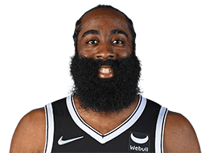

NBA
首页
赛程
球员
精彩集锦
球队
联系我们

詹姆斯-哈登
James Harden
James Harden
别名
哈登
身高
哈登
体重
100.0kg
臂展
210cm
选秀
2009年首轮第3位被雷霆队选中
薪水
4431万美元
球龄
12年
国籍
美国
学校
亚利桑那州立大学
球员介绍
詹姆斯-哈登（英文名：James Harden，1989年8月26日出生），家乡位于美国加利福尼亚州洛杉矶市。在2009年NBA选秀大会中以探花秀的身份被雷霆队选中，正式成为职业篮球运动员。绰号“大胡子、登哥”，现效力于布鲁克林篮网队，场上位置为后卫。
詹姆斯-哈登（英文名：James Harden，1989年8月26日出生），家乡位于美国加利福尼亚州洛杉矶市。在2009年NBA选秀大会中以探花秀的身份被雷霆队选中，正式成为职业篮球运动员。绰号“大胡子、登哥”，现效力于布鲁克林篮网队，场上位置为后卫。
2009年哈登被雷霆队选中后，正式开启了NBA职业生涯，2009-2010赛季，入选最佳新秀第二阵容；2011–12赛季获选NBA年度最佳第六人，并帮助球队打入总决赛，在总决赛中以1-4不敌迈阿密热火队无缘总冠，此后哈登再也没有踏进过总决赛舞台。2012–13赛季，哈登被交易到休斯顿火箭。连续8个赛季带领火箭队直奔季后赛，成为了联盟最优秀的篮球员之一，甚至被誉为“现役最强球员”；2017-18赛季哈登力压勒布朗-詹姆斯勇夺常规赛MVP。此外，哈登曾代表美国队参加2012年伦敦奥运会以及2014年世界杯篮球赛，均终获得了冠军。
2012–13赛季，哈登被交易到休斯顿火箭。连续8个赛季带领火箭队直奔季后赛，成为了联盟最优秀的篮球员之一，甚至被誉为“现役最强球员”；2017-18赛季哈登力压勒布朗-詹姆斯勇夺常规赛MVP。此外，哈登曾代表美国队参加2012年伦敦奥运会以及2014年世界杯篮球赛，均终获得了冠军。
©2021包头师范学院20级国际班ZYN--web项目
任何内容都不得以任何形式被复制、再传播，或篡改。
有任何的建议和意见，都欢迎联络我:1176164611@qq.com